Project overview
My project is a website dedicated to Hogwarts School, the fictional institution from the Harry Potter series. I created it as my final project for the CS50: Introduction to Computer Science course. My objective was to design a digital representation of the renowned school, with a primary focus on digitalizing the enrollment process for first-year students.
Technologies used
- Python
- Flask
- Jinja
- SQLite3
- JavaScript
- Bootstrap
- AJAX and JSON to communicate between JavaScript and Python
Key features
I designed a modal inspired by the Hogwarts Acceptance Letter, which is displayed immediately after the user completes the registration form.
 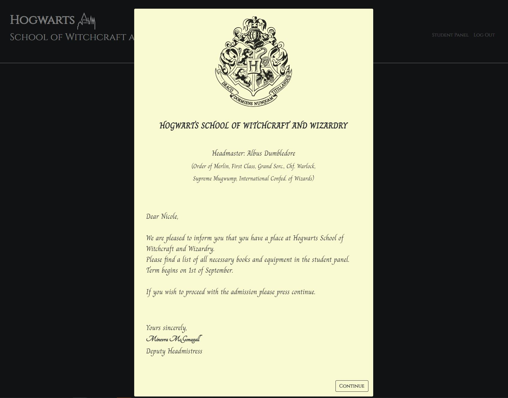
The user's name is extracted from the form and displayed in the greeting section of the letter.
Upon clicking the continue button, users are directed to a dynamic Sorting Hat Quiz to determine their Hogwarts house.
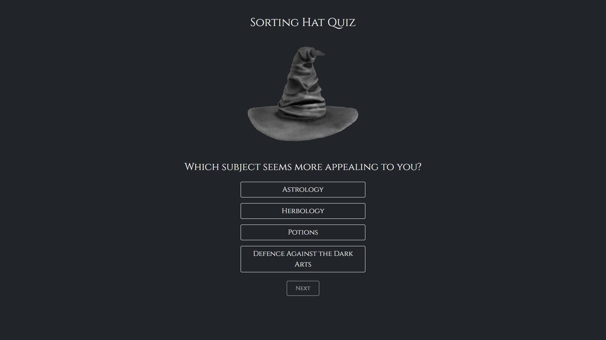
In the event of a tie in points between houses, users have the opportunity to choose the house they would like to join.
After completing the quiz, a modal with the crest, house name, and house colors is displayed.
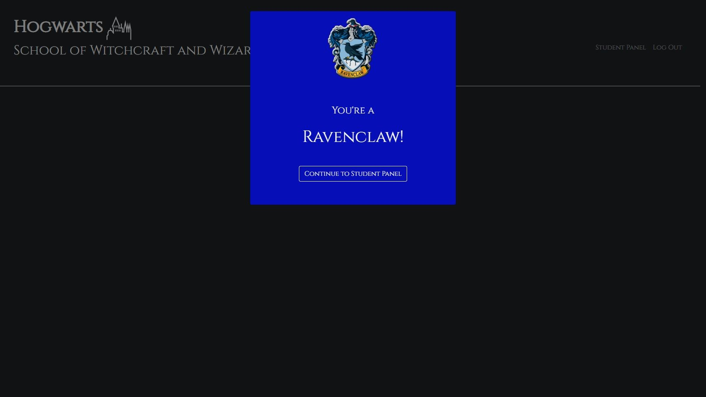
Next, users gain access to the student panel, where they can explore and enroll in various subjects for the academic year.
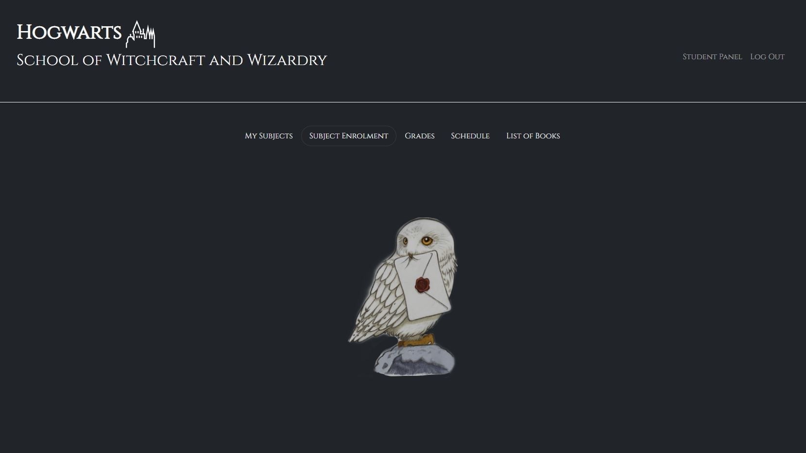
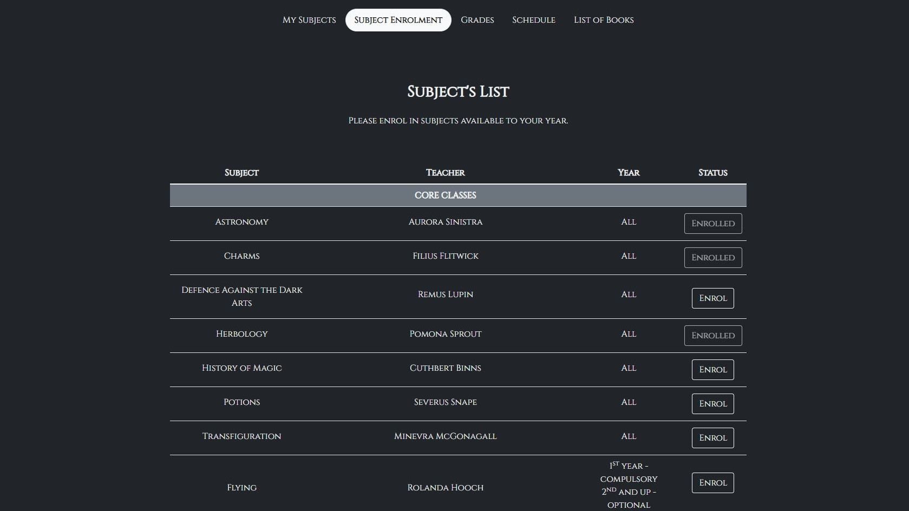
Once enrolled, they can review the curriculum for each subject, which is sourced from an integrated database.
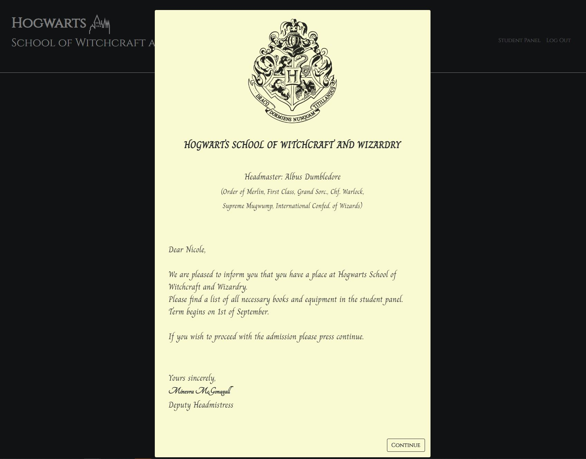
The user's name is extracted from the form and displayed in the greeting section of the letter.
Upon clicking the continue button, users are directed to a dynamic Sorting Hat Quiz to determine their Hogwarts house.
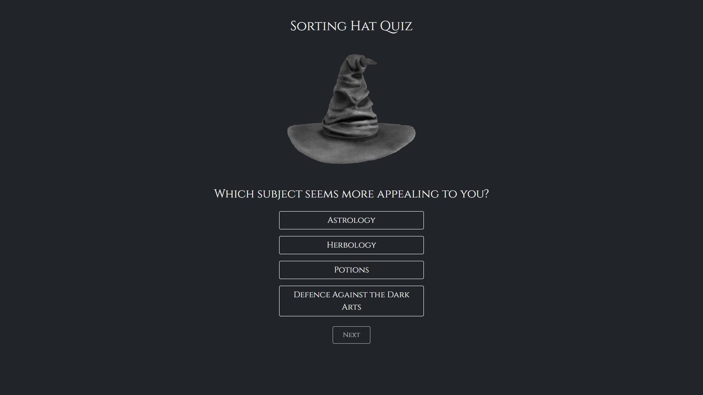
In the event of a tie in points between houses, users have the opportunity to choose the house they would like to join.
After completing the quiz, a modal with the crest, house name, and house colors is displayed.
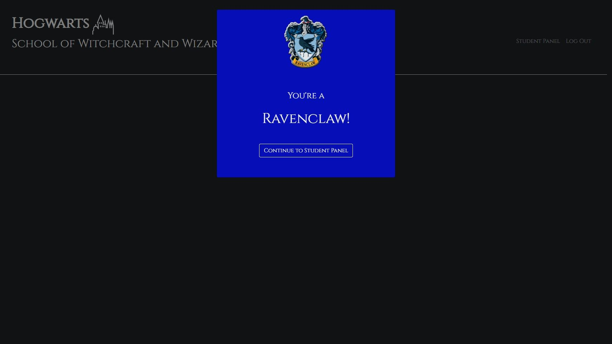
Next, users gain access to the student panel, where they can explore and enroll in various subjects for the academic year.
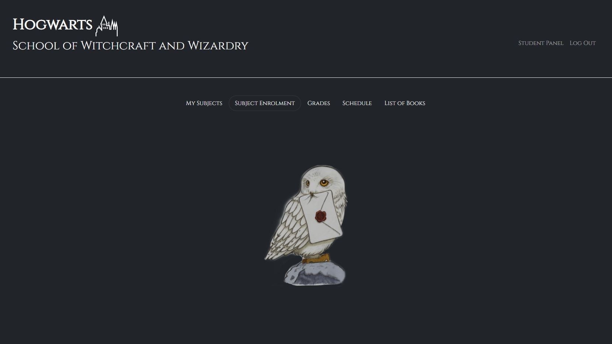
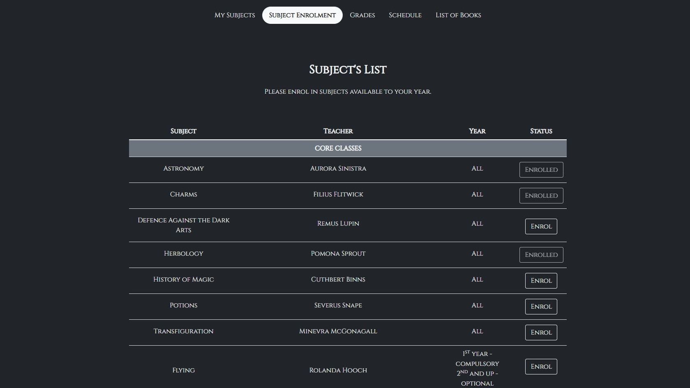
Once enrolled, they can review the curriculum for each subject, which is sourced from an integrated database.
 Additionally, there's a modal designed to resemble the List of Required Books and Equipment from the books,
providing users with a familiar and engaging experience.
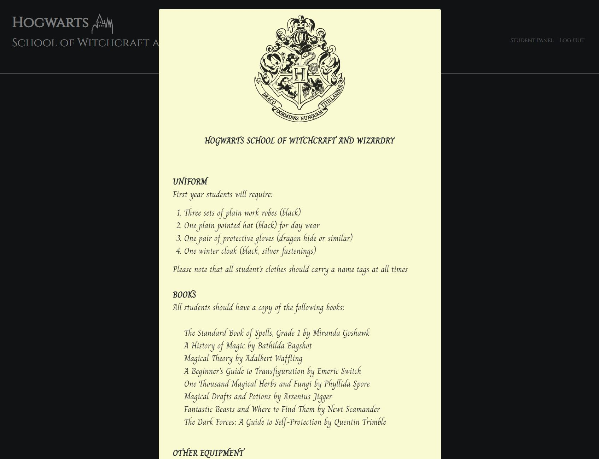
Additionally, there's a modal designed to resemble the List of Required Books and Equipment from the books,
providing users with a familiar and engaging experience.
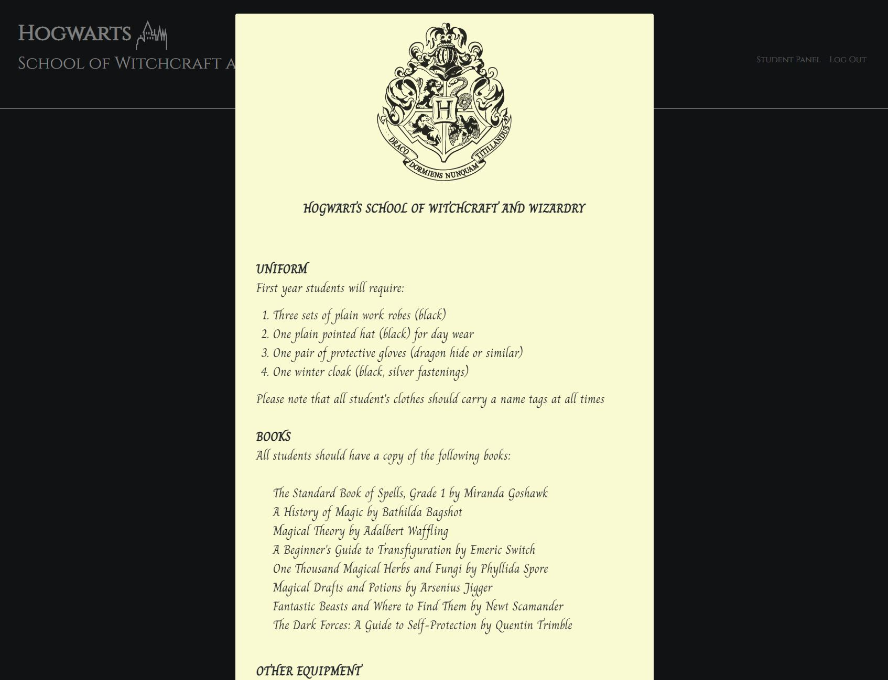
Challenges and solutions
During the development process, I faced two main challenges: designing a dynamic quiz and managing user enrollment.
- For the quiz, I needed to track user answers and assign points to Hogwarts houses. I resolved this by creating a custom object to maintain house points, using a JSON file to store quiz content, and incorporating DOM manipulation and event listeners to update the quiz dynamically. This solution provided a seamless and engaging experience for users.
- Another challenge was displaying enrolled subjects and updating enrollment buttons based on user status. I used the Fetch API to facilitate communication between the front-end and back-end, allowing data exchange as JSON objects. I then dynamically updated enrollment buttons using JavaScript and event listeners, providing real-time feedback to users without requiring a page refresh. This approach ensured a smooth user experience.
Learning outcomes
Through this project, I have gained valuable experience and honed various skills:
- Problem-solving: Identifying challenges in web development projects and implementing effective solutions.
- DOM manipulation and event handling: Utilizing DOM elements and event listeners to create dynamic and interactive web content.
- JSON data handling: Gaining experience in creating, parsing, and handling JSON data for dynamic content and communication between the front-end and back-end.
- AJAX and Fetch API: Employing AJAX and the Fetch API to facilitate seamless communication between the front-end and back-end.
- Database integration and updating: Integrating and updating databases according to user interactions, demonstrating a foundational understanding of back-end concepts.
- Responsive design: Creating user interfaces that adapt to various screen sizes and devices, ensuring an optimal user experience